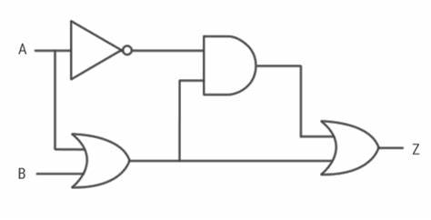
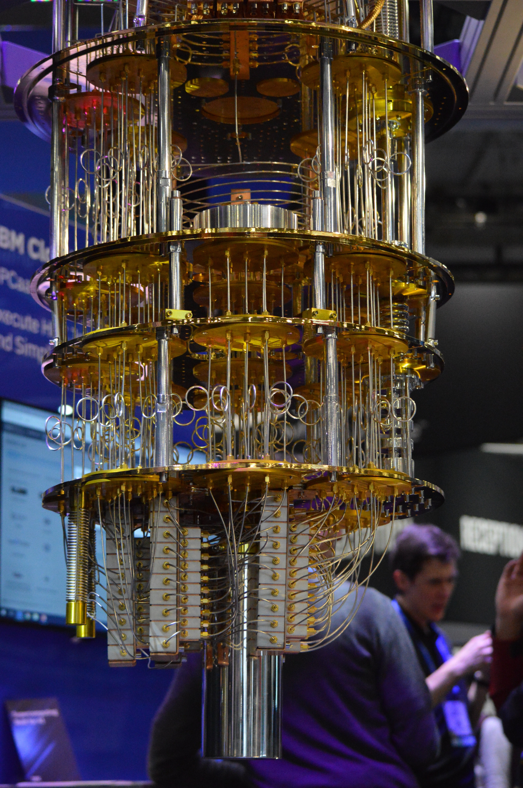
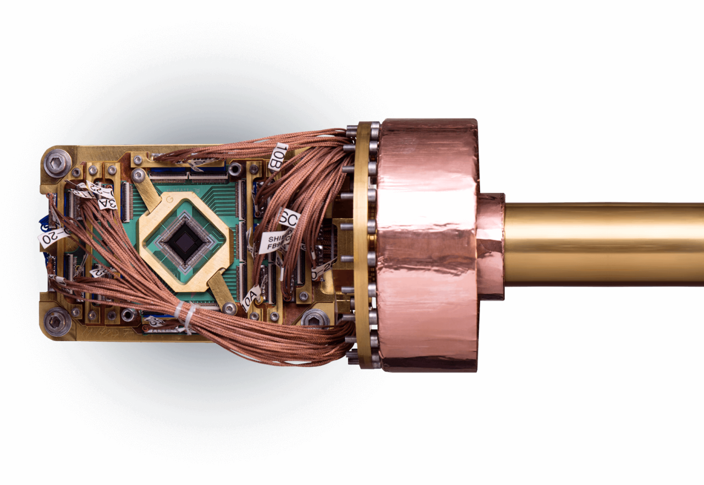
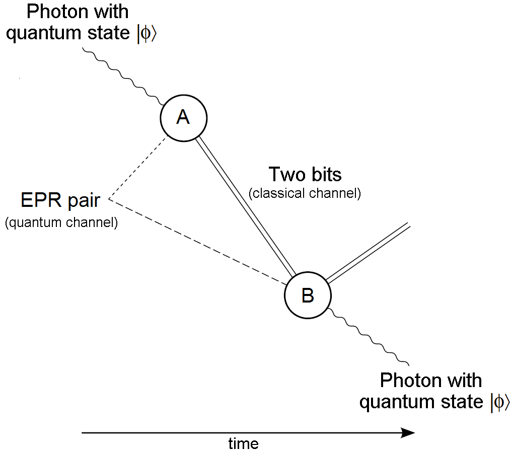
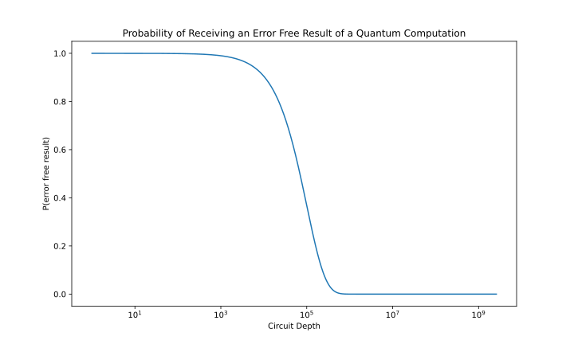
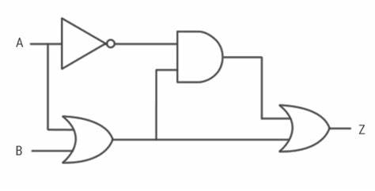
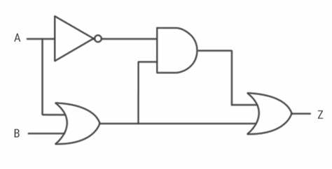

Quantum computers, like regular or classical computers are circuits. Like classical computers quantum computers have things that store information: registers. and things that act on information stored: gates. That is where the similarities end. That is where the similarities end. While classical computers encode their information in binary, quantum computers encode their information in a complex valued vector space called a Hilbert space. This means that while 1 bit on a classical computer can store 2 values, a 1 or a 0, one qubit on a quantum computer can store 1, 0, or any superposition in between.
The bloch sphere is a way to represent a single qubit state. A qubit in the \(\ket{1}\) state will be pointing north and a qubit in the \(\ket{0}\) state will be pointing south. Qubits can also exist pointing in any other state between these two computational states.(CC BY-SA 3.0, Source)
Additionally, quantum computers manipulate the value of these qubits using principles of quantum mechanics. These factors lead to quantum computers having unique capabilities compared to classical computers.
For a more in depth explanation, check out this video.
"Quantum Computers, Explained With Quantum Physics". Quanta Magazine
What is a quantum computer
Quantum computers come in many types but there are two predominant models at present. Gate-model quantum computers and quantum annealers. Gate model quantum computers represent operations qubits as travelling down wires through gates to complete computations. This will be familiar to anyone who has worked with classical circuits. These gate model quantum circuits are what the most popular quantum algorithms are using.

A circuit constructed for a gate-model quantum computer (left) and a classical electrical logic cirucit (right)Source
Quantum annealers work very differently and are used for different applications. The quantum annealing process begins by putting many qubits into each possible computational state. Then, the system evolves according to a programmed set of parameters. As the system evolved, qubits are shaken into the most likely energy states which are then read out. This method proves useful for optimization problems such as graph-coloring, travelling salesman problems, and 3-SAT.

The internals of a quantum computer. Pictured here is an ibm system surounded by plubming for supercooled helium. Source

A DWave QPU. Qauntum computers use chips called QPUs (quantum processing units) to create their qubits. Source
What can quantum computers do
So what are the applications that quantum computers will be better at than classical computers?
The intrinsically non-deterministic nature of quantum computers makes them particularly interesting for cryptographic applications. In particular, the fact that qubits cannot be intercepted, read, and retransmitted leads to unbreakable encryption. Photons are currently being used as long-distance transmittable qubits to enable this quantum cryptography. Chinese research institutes are well on their way to developing a network for exchanging quantum cryptographic keys.

A diagram for quantum teleportation required for quantum key distribution for quantum cryptographic communications. (GFDL, Link)
At the same time, a beyond-NISQ quantum world threatens our current classical security systems. Quantum algorithms will allow the cracking of encrypted data that was previously thought to be secure.
This disruption to our ability to keep secrets from each other will have immense ramifications. There are concerns that groups are collecting encrypted communications over public channels and waiting for the day that quantum computers can unlock them. Imagine which private message, photograph, password, or other digital secret would cause you the most damage if you were to send it to a malicious actor. Now imagine what kind of damage would happen if instead of you, it was your government.
Noisy intermediate state quantum computing
So given that quantum computers exist, and quantum algorithms exist, why have we not seen a noticeable change in our lives? The issue lies in scale. We can only execute these algorithms on a small number of qubits at a small circuit depth before noise becomes the dominating issue. For reference, RSA-2048 is a popular encryption algorithm relying on the difficulty of factoring a large semiprime number. With a classical computer, it is estimated that it would take somewhere in the neighbourhood of 300 trillion years to break. If we could utilize Shor's algorithm to speed this up, we could crack it in 8 hours. Doing this however, would require a little over 2.6 billion gate operations. If we assume an error rate of 0.001% (much better than our current quantum computers), we will receive an error free result with a rate of \(0.99999^{2600000000}\) or roughly never.

Probability of receiving an error free result vs circuit depth. The probability of receiving a useful result quickly drops to 0 before reaching the depth needed to perform Shor's algorithm to decrypt RSA-2048.
However, a recent paper from Microsoft Azure and Quantinuum suggest a promising step towards less noisy quantum computers. They have managed to demonstrate the use of logical qubits to reduce error rates by a factor of as much as 800x the physical level. While this does not yet signify a universal fault-tolerant quantum computer, it is one step closer to a beyond-NISQ future.
 
